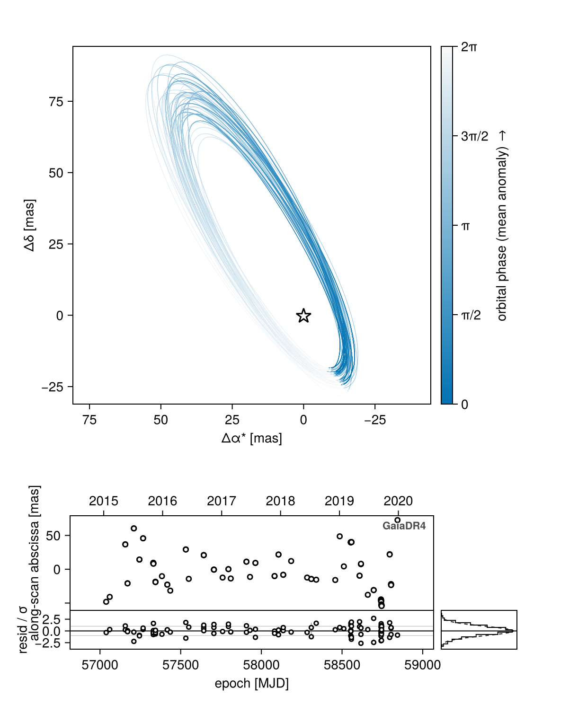
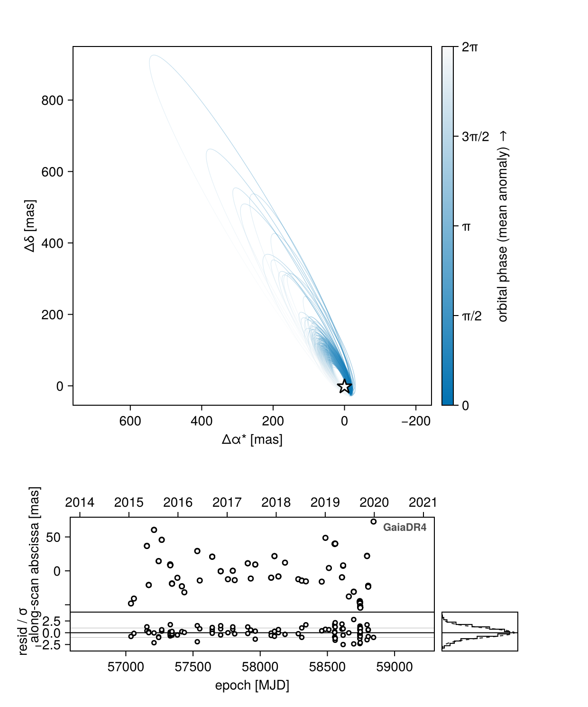
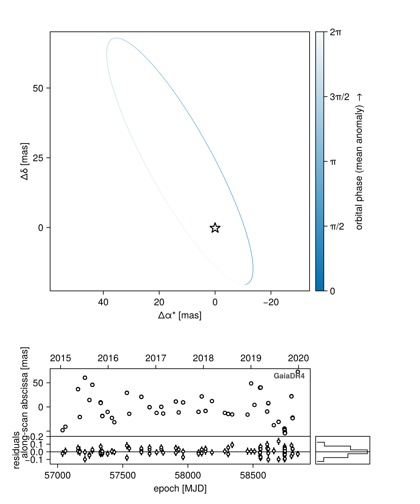
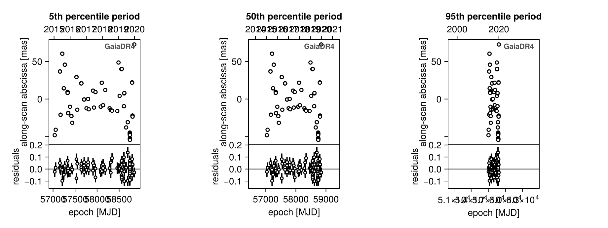
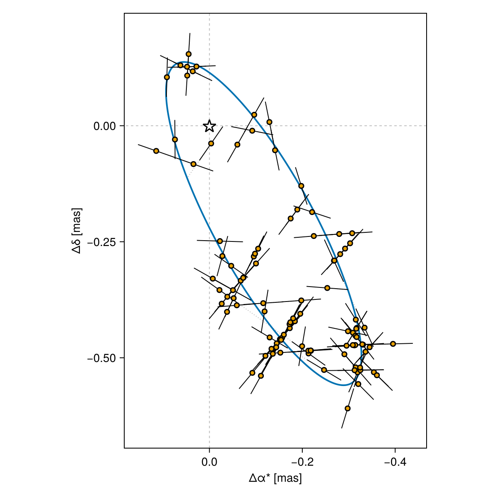
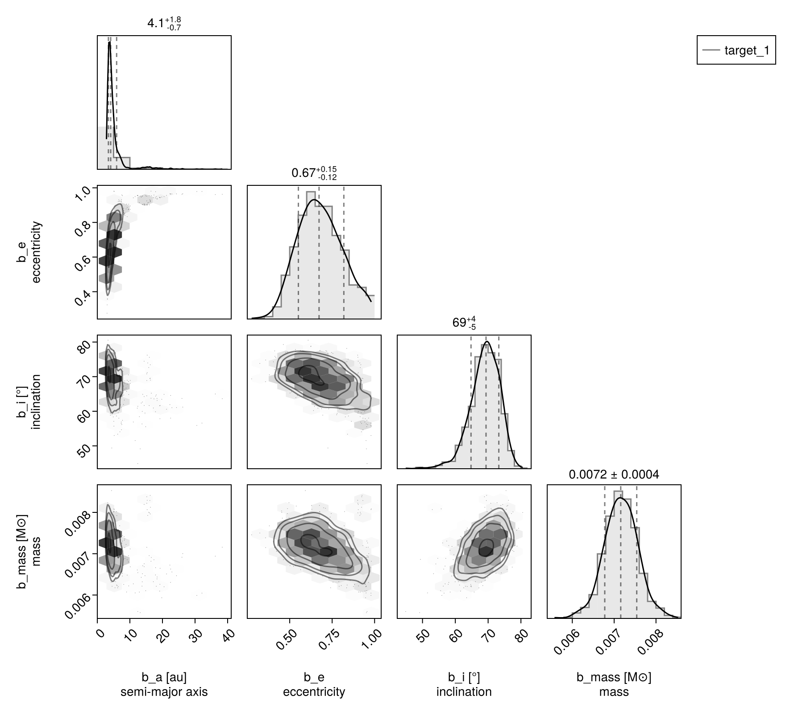

Fitting Gaia DR4 IAD
This tutorial shows how you can use Octofitter to fit preliminary RV and absolute astrometry data from DR4, using various already published data, including:
- Gaia-BH3 black hole (the only real DR4 data released so far)
- Data from https://dace.unige.ch/openData/?record=10.82180/dace-gaia-ohp
The final format of the Gaia IAD data may change, in which case this tutorial will be updated.
using CairoMakie
using Octofitter
using Pigeons
using Distributions
using CSV, DataFrames
using StatisticsOHP Gaia Splinter Session
Download and plot the data:
fname = download("https://dace.unige.ch/downloads/open_data/dace-gaia-ohp/files/target_1.csv")
df = CSV.read(fname, DataFrame);df = CSV.read(joinpath(@__DIR__, "target_1.csv"), DataFrame)We can now construct a likelihood object for this data.
The observation carries data, references, and variables — nothing else — and never touches the archive. Query the DR3 solution yourself where you need it: Octofitter._query_gaia_dr3(; gaia_id=…).
It also names what it is a measurement of: target=Photocentre (the whole system's flux-weighted point, the default) measured against ref=Barycentre. That is what makes blended and multi-source models expressible — see GaiaDR4AstromObs for a two-source 2+2 quadruple.
ref_epoch_mjd = 57936.375
gaia_dr4_obs = GaiaDR4AstromObs(
df,
target = Photocentre,
ref = Barycentre,
name = "GaiaDR4",
variables=@variables begin
astrometric_jitter ~ LogUniform(0.00001, 10) # mas
ra_offset_mas ~ Normal(0, 10000)
dec_offset_mas ~ Normal(0, 10000)
pmra ~ Uniform(-1000, 1000) # mas/yr
pmdec ~ Uniform(-1000, 1000) # mas/yr
ref_epoch = $ref_epoch_mjd
end
)GaiaDR4AstromObs "GaiaDR4" Photocentre vs Barycentre
Table with 7 columns and 102 rows:
obs_time_tcb centroid_pos_al centroid_pos_error_al parallax_factor_al scan_pos_angle field_of_view epoch
┌─────────────────────────────────────────────────────────────────────────────────────────────────────────────────
1 │ 2.45704e6 -48.1529 0.044486 0.694068 2.72271 2 57038.2
2 │ 2.45706e6 -40.9114 0.0447412 -0.583294 -2.36159 2 57060.2
3 │ 2.45716e6 36.8968 0.0441832 0.36178 0.710367 1 57156.8
4 │ 2.45716e6 36.6379 0.0488587 0.358281 0.714199 2 57156.8
5 │ 2.45717e6 -20.7433 0.061433 -0.522976 1.5846 1 57170.5
6 │ 2.45717e6 -20.9825 0.0470352 -0.526464 1.58803 2 57170.6
7 │ 2.45721e6 60.4545 0.0409268 0.7256 -0.294868 1 57209.7
8 │ 2.45721e6 60.3531 0.0423611 0.725443 -0.295416 2 57209.8
9 │ 2.45724e6 14.2189 0.0413549 -0.611316 0.797734 1 57244.2
10 │ 2.45724e6 14.3917 0.0447546 -0.609065 0.794002 2 57244.3
11 │ 2.45727e6 45.7711 0.0384871 0.385425 -0.726784 1 57267.0
12 │ 2.45727e6 45.7168 0.0406302 0.387544 -0.731293 2 57267.0
13 │ 2.45733e6 9.56681 0.0398049 -0.162231 -1.49614 2 57330.3
14 │ 2.45733e6 9.15272 0.0394856 -0.156233 -1.50874 1 57330.5
15 │ 2.45733e6 9.0219 0.0425311 -0.153719 -1.514 2 57330.5
16 │ 2.45733e6 8.60603 0.0402893 -0.147658 -1.52661 1 57330.7
17 │ 2.45733e6 8.43312 0.0416049 -0.145114 -1.5319 2 57330.8
18 │ 2.45733e6 8.11853 0.0400409 -0.138987 -1.54454 1 57331.0
19 │ 2.45734e6 -18.5428 0.0384698 0.366822 -2.45997 1 57343.5
20 │ 2.45734e6 -18.6472 0.0436691 0.369776 -2.46517 2 57343.5
21 │ 2.45734e6 -18.91 0.0374483 0.376832 -2.4776 1 57343.7
22 │ 2.45734e6 -19.0 0.0383548 0.379764 -2.48277 2 57343.8
23 │ 2.45738e6 -10.2617 0.0404848 -0.685462 -1.7787 2 57383.8
24 │ 2.45742e6 -22.7646 0.0402788 0.647445 2.59671 1 57416.9
25 │ 2.45742e6 -22.8093 0.0412497 0.64541 2.59843 2 57417.0
26 │ 2.45744e6 -31.651 0.0390913 -0.499 -2.57765 1 57435.4
27 │ 2.45753e6 29.3685 0.0476012 0.482105 0.427209 1 57531.8
28 │ 2.45753e6 29.1126 0.0427122 0.479404 0.430184 2 57531.9
29 │ 2.45755e6 -14.2115 0.0422602 -0.636331 1.49303 1 57550.1
30 │ 2.45764e6 20.9087 0.0392156 0.211487 -0.720942 1 57642.8
31 │ 2.45764e6 20.8808 0.0412828 0.213899 -0.725945 2 57642.8
32 │ 2.45764e6 20.882 0.038601 0.219666 -0.737922 1 57643.0
33 │ 2.45764e6 20.8178 0.0391126 0.222047 -0.742913 2 57643.1
34 │ 2.45771e6 -0.579278 0.0402944 -0.334369 -1.48939 1 57705.8
35 │ 2.45771e6 -0.560858 0.0413627 -0.332083 -1.49425 2 57705.8
36 │ 2.45771e6 -0.619925 0.0410127 -0.326537 -1.50593 1 57706.0
⋮ │ ⋮ ⋮ ⋮ ⋮ ⋮ ⋮ ⋮
The observation's parallax comes from the system's own plx; there is nothing to forward into this block.
The fluxes are read off the bodies themselves, so a model in which no body declares a flux variable errors on the first likelihood evaluation with no fluxes defined: give at least one body a flux. Give the host flux = 1.0 and every other body's flux is then a contrast ratio against it — flux = 0.0 for a dark companion (so the photocentre is just the host), or a real prior such as flux ~ Uniform(0, 1) for a luminous one. Use flux_G and target=Photocentre(:G) if you carry more than one band.
orbit_ref_epoch = mean(gaia_dr4_obs.table.epoch)
A = Body(
name="A",
variables=@variables begin
mass = 1.0 # Msol
flux = 1.0 # the host defines the flux scale for the photocentre
end
)
b = Body(
name="b",
about=A,
variables=@variables begin
flux = 0.0 # dark companion: the photocentre is then just the host
a ~ LogUniform(0.01, 100)
e ~ Uniform(0, 0.99)
ω ~ Uniform(0,2pi)
i ~ Sine()
Ω ~ Uniform(0,2pi)
# `θ` (position angle at `epoch`) is a phase parametrization the orbit
# constructor accepts directly.
θ ~ Uniform(0,2pi)
epoch = $orbit_ref_epoch
mass ~ LogUniform(0.01mjup, 1000mjup) # Msol
end
)
sys = System(
name="target_1",
bodies=[A, b],
observations=[gaia_dr4_obs],
variables=@variables begin
# Note: keep these physically plausible to prevent numerical errors
plx ~ Uniform(0.01,100) # mas
end
)
model = Octofitter.LogDensityModel(sys, verbosity=4)LogDensityModel for System target_1 of dimension 13 and 102 epochs with fields .ℓπcallback and .∇ℓπcallback
Find a starting point via global optimization and variational approximation, and plot the initial points against the data:
init_chain = initialize!(model)
octoplot(model, init_chain)
Sample using parallel tempering (could also use HMC for these unimodal distributions):
chain, pt = octofit_pigeons(model, n_rounds=10)(chain = MCMC chain (1024×22×1 Array{Float64, 3}), pt = PT(checkpoint = false, ...))Every fit on this page uses octofit_pigeons. Epoch astrometry constrains an orbit only through the one-dimensional along-scan abscissa, so the posterior is prone to widely-separated solutions — and tempering is what lets a replica escape one of them. It is also the sampler that scales across cores, which matters here because the last example carries many hundreds of data points.
These particular posteriors happen to be close to unimodal, so octofit (HMC/NUTS) is a perfectly reasonable substitute and is much cheaper per sample. Seed it with initialize! as above, and run a few chains from different starting points before trusting a narrow result.
Plot the results:
octoplot(model, chain)
octoplot draws the along-scan abscissa panel automatically: GaiaDR4AstromObs declares one plot channel (:along_scan), so the generic time-series panel shows the calibrated data, the modelled abscissae, a residual strip, and a marginal residual histogram. There is no smooth model curve for this channel and there cannot be — the abscissa depends on the per-transit scan angle, so it is only defined at the data epochs.
If we pick an individual draw, we can plot the orbit against the Gaia data more directly. Like RV, this only works with individual draws, because the Gaia points are "detrended" in a sense from the values of a particular draw (they move around the plot depending on the draw). Build a PosteriorSeries restricted to the draws you want and hand it to octoplot:
idx = rand(1:size(chain,1)) # pick an integer randomly
series = Octofitter.PosteriorSeries(model, chain; ii=[idx])
octoplot(series)
A good practice is to plot a few different values from the posterior, or e.g. plot draws from 5th, 50th, and 95th percentile in a key orbit parameter like
- semi-major axis
- eccentricity
- inclination
Here, we show semi-major axis/period
percentile_positions = round.(Int, [0.05, 0.50, 0.95] .* size(chain,1))
indices = [partialsortperm(chain["b_a"][:], k) for k in percentile_positions]
# hint! Try `"b_e", "b_a", and "b_i"
entries = [(gaia_dr4_obs, ch) for ch in Octofitter.plotchannels(gaia_dr4_obs)]
fig = Figure(size=(920,345))
for (col, (idx, title)) in enumerate(zip(indices,
("5th percentile period", "50th percentile period", "95th percentile period")))
s = Octofitter.PosteriorSeries(model, chain; ii=[idx])
axs = timeseriespanel!(fig[1,col], s, entries; show_hist=false)
axs.main.title = title
end
fig
timeseriespanel! is the same generic panel octoplot assembles: you hand it a PosteriorSeries and a list of (observation, channel) pairs, and it draws model, data, and a residual strip.
The wobble in the sky plane
Gaia constrains one direction per transit, so a measurement is a line, not a point. gaiastarplot shows that geometry for a single draw: the modelled reflex track, and each transit's along-scan residual re-projected into the sky plane along its own scan angle, with a 1σ tick in the same direction and a dotted connector back to the track.
Octofitter.gaiastarplot(model, chain)
skytrackplot zooms out to the source's whole path — parallactic loops, proper motion, and the orbital wobble superimposed — which is the picture of why the wobble is hard to extract. keplerian_mult exaggerates the orbital term so you can see it against the parallax.
The parallax ellipse has to be projected onto a sky direction. The observation does not carry a catalog solution, so give the direction explicitly, or let gaia_dr3_solution fetch the published one:
Octofitter.skytrackplot(model, chain; gaia_id=4318465066420528000, keplerian_mult=20)
# …or, with no network access, name the direction yourself:
Octofitter.skytrackplot(model, chain; ra=294.83, dec=14.93, keplerian_mult=20)(When the model declares a full absolute frame, ra/dec are taken from it and neither keyword is needed.)
And of course, you can make a corner plot as usual:
using PairPlots
octocorner(model, chain, small=true)
Cross-validation
You can use the full suite of tools for construting models that subset different amounts of data in different ways. See "Cross Validataion".
The most powerful is exhaustive leave-one-out cross validataion plus calculation of expected log pointwise density (ELPD) to score the fit.
likelihood_mat, epochs = Octofitter.pointwise_like(model, chain)
# `likelihood_mat` is now a N_sample x N_data matrix.
using ParetoSmooth
result = psis_loo(
collect(likelihood_mat'),
chain_index=ones(Int,size(chain,1))
)Simulate data from a posterior draw, and re-fit with or without noise
Optional consistency checks–-could be used in a loop as part of e.g. simulation based calibration.
template = Octofitter.mcmcchain2result(model, chain, 1)
sim_system = Octofitter.generate_from_params(model.system, template; add_noise=true)
sim_model = Octofitter.LogDensityModel(sim_system)
# Optional initialization speed up hack:
sim_model.starting_points = model.starting_points;
# then re-fit...
sim_chain, pt = octofit_pigeons(sim_model, n_rounds=5)
octoplot(sim_model, sim_chain)Using NSS Catalog Solutions as Starting Points
The Gaia Non-Single Star helpers (initialize_from_nss!, query_nss, nss_to_starting_point, nss_to_model_chain) have not been brought onto the current model surface; the source is parked in src/legacy/nss.jl. If you have an NSS solution, convert it to orbital elements yourself and pass them to initialize! or startingpoints!:
startingpoints!(model, (;
plx = 1.67,
bodies = (; b = (; a = 18.9, e = 0.76, i = 1.92, ω = 1.1, Ω = 2.4, θ = 0.8)),
observations = (; GaiaDR4 = (; astrometric_jitter = 0.03,
ra_offset_mas = 0.0, dec_offset_mas = 0.0,
pmra = -28.3, pmdec = -155.0)),
))NSS solutions should be used as starting points only, not as priors — that would be using the data twice.
Gaia BH 3
The following tutorial reproduces the fit to Gaia BH3. This one can take longer to run since the orbit is ultra well constrained. For that reason, we don't run it automatically when building the docs. Please go ahead and run the code on your own computer; ETA=approx 20 minutes.
As a first step, we will load the astrometry data for Gaia-BH3 and plot it:
headers = [
:transit_id
:ccd_id
:obs_time_tcb
:centroid_pos_al
:centroid_pos_error_al
:parallax_factor_al
:scan_pos_angle
:outlier_flag
]
df = CSV.read(joinpath(@__DIR__, "astrom.dat"), DataFrame, skipto=7, header=headers, delim=' ', ignorerepeated=true)
df.epoch = jd2mjd.(df.obs_time_tcb)
# The table published with the BH3 paper gives scan_pos_angle in DEGREES, but
# GaiaDR4AstromObs takes sincos(scan_pos_angle) directly and so expects RADIANS.
df.scan_pos_angle = deg2rad.(df.scan_pos_angle)
scatter(
df.obs_time_tcb,
df.centroid_pos_al,
)We can now construct a likelihood object for this data:
ref_epoch_mjd = 57936.375
gaia_bh3_astrom_obs = GaiaDR4AstromObs(
df,
target = Photocentre,
ref = Barycentre,
name = "GaiaDR4",
variables=@variables begin
astrometric_jitter ~ LogUniform(0.00001, 10) # mas
ra_offset_mas ~ Normal(0, 10000)
dec_offset_mas ~ Normal(0, 10000)
pmra ~ Uniform(-1000, 1000) # mas/yr
pmdec ~ Uniform(-1000, 1000) # mas/yr
ref_epoch = $ref_epoch_mjd
end
)Next, the two bodies. Note that both masses are in solar masses:
orbit_ref_epoch = mean(gaia_bh3_astrom_obs.table.epoch)
A_bh3 = Body(
name="A",
variables=@variables begin
mass ~ truncated(Normal(0.76, 0.05), lower=0.1) # Msol
flux = 1.0 # the luminous star sets the photocentre's flux scale
end
)
BH = Body(
name="BH",
about=A_bh3,
variables=@variables begin
mass ~ LogUniform(1.0, 1000.0) # Msol
flux = 0.0 # a black hole contributes no light
a ~ Uniform(0, 1000)
e ~ Uniform(0, 0.99)
ω ~ Uniform(0,2pi)
i ~ Sine()
Ω ~ Uniform(0,2pi)
θ ~ Uniform(0,2pi)
epoch = $orbit_ref_epoch
end
)This object also has published RV data from Gaia, which we can load and use as normal.
One type covers both kinds of RV: RadialVelocityObs, with target=A, ref=Barycentre for stellar reflex and target=b, ref=A for relative RV. It lives in core Octofitter, so a plain RV model does not need using OctofitterRadialVelocity. Nothing is auto-injected — an observation with no variables= block fits with no zero point and no jitter.
headers_rv = [
:transit_id,
:obs_time_tcb,
:radial_velocity_kms,
:radial_velocity_err_kms,
]
dfrv = CSV.read(joinpath(@__DIR__, "epochrv.dat"), DataFrame, skipto=7, header=headers_rv, delim=' ', ignorerepeated=true)
dfrv.epoch = jd2mjd.(dfrv.obs_time_tcb)
dfrv.rv = dfrv.radial_velocity_kms * 1e3
dfrv.σ_rv = dfrv.radial_velocity_err_kms * 1e3
# Calculate mean RV for the prior
mean_rv = mean(dfrv.rv)
rvlike = RadialVelocityObs(
dfrv,
target = A_bh3,
ref = Barycentre,
name="GaiaRV",
variables=@variables begin
offset ~ Normal(mean_rv, 10_000) # wide prior on RV offset centred on mean RV
jitter ~ LogUniform(0.01, 100_000) # RV jitter parameter
end
)
errorbars(
dfrv.obs_time_tcb,
dfrv.rv,
dfrv.σ_rv
)Now, we assemble the system. Both observations are listed on the system; neither is attached to a body:
sys = System(
name="gaiadr4test",
bodies=[A_bh3, BH],
observations=[gaia_bh3_astrom_obs, rvlike],
variables=@variables begin
# Note: keep these physically plausible to prevent numerical errors
plx ~ Uniform(0.01,100) # mas
end
)
model = Octofitter.LogDensityModel(sys, verbosity=4)We will initialize the model starting positions and visualize them:
# Note: you can see the required format for parameter initialization by running:
# nt = Octofitter.drawfrompriors(model.system);
# println(nt)
# then remove any derived parameters (parameters in your model that are on the right of an `=`)
init_chain = initialize!(model, (;
plx = 1.6686144513164856,
bodies = (;
A = (; mass = 0.7792923132247755),
BH = (; mass = 36.032664849109906,
a = 18.905647598089196,
e = 0.7583328001601555,
i = 1.9216027029499319),
),
observations = (;
GaiaDR4 = (; astrometric_jitter = 0.027554101045898238),
GaiaRV = (; offset = -359481.6706770764, jitter = 2143.4793485877644),
),
))
octoplot(model, init_chain)Note that starting values nest under bodies=, and that the host star is a body like any other, so its mass is initialized in the same place.
If you don't pick the starting point, you can also just run Pigeons for 8-10 rounds, which is recommended anyway for convergence, and the sampler will find this result.
Now, we can perform the fit. It is a little slow since we have many hundreds of RV and astrometry data points.
chain, pt = octofit_pigeons(model, n_rounds=6) # might need more rounds to convergePigeons can resume an existing run, so you can add rounds until the reported log(Z₁/Z₀) and Λ settle instead of starting over:
increment_n_rounds!(pt, 1)
chain, pt = octofit_pigeons(pt)Finally, we can visualize the results. octoplot produces the along-scan panel from the astrometry and a radial-velocity panel (plus a phase-folded one) from the RVs, so one call covers the whole fit:
octoplot(model, chain)rvpostplot is the RV-only slice of that same figure, and gaiastarplot / skytrackplot add the sky-plane views of the astrometry:
rvpostplot(model, chain)
Octofitter.gaiastarplot(model, chain)
Octofitter.skytrackplot(model, chain; gaia_id=4318465066420528000, keplerian_mult=5)octocorner(model, chain, small=true)